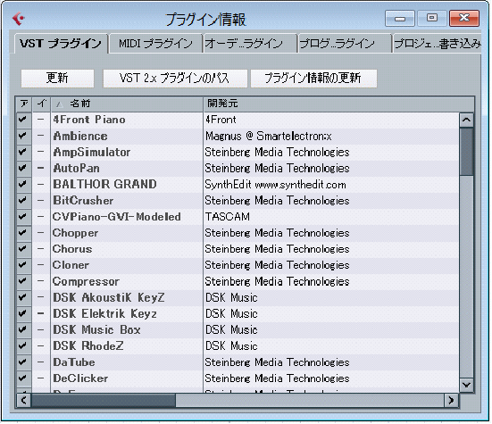
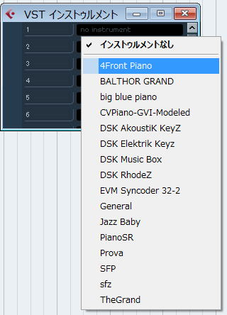

| TOP | weblog | TIPS | Works | リンク | 戻る |
| VSTインスツルメントの設定 デフォルトではへんなフォルダになっているので自分の環境に合わせてフォルダを設定する。  ＶＳＴインスツルメントの設定 [プラグインのパス]を追加、変更する  今どき「Common File」なんて使わないしVST入ってないから消す。  VSTの入っているフォルダを片っ端から設定して[OK]ボタンをクリック。  「更新」 [プラグイン情報の更新]ボタンをクリック。 砂時計が出ないときがあるので、しばし待つ。  ＶＳＴインスツルメントの追加 ・Ｃｔｒｌ＋Ｆ１１ でダイアログを表示してクリックするとプルダウンメニューでインスツルメントが表示される。  |